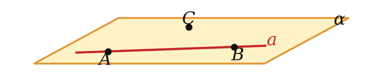
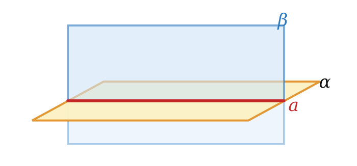

точка, прямая, плоскость и шесть правил игры
Определения строятся по принципу «новое — через старое». Значит, первые понятия приходится принять без определения.
В стереометрии их три: точка, прямая, плоскость.
| Словами | Символами |
|---|---|
| точка A лежит в плоскости α | A ∈ α |
| точка B не лежит в α | B ∉ α |
| прямая a лежит в α | a ⊂ α |
| прямая a пересекает α в точке A | a ∩ α = A |
| плоскости α и β пересекаются по прямой a | α ∩ β = a |


Аксиомы А1–А6 — наизусть и со своими примерами